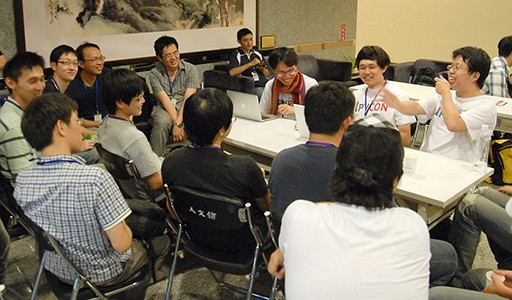

關於 PyCon
PyCon 是由 Python 使用者社群舉辦的年度聚會. 參加者的使用經驗不拘，從初階入門者至高階駭客都有。
第一次的 PyCon 是2003年於美國舉辦。隨著時間的經過以及使用者人數的增加，截至今日，每年有非常多的 PyCon 在世界各地舉辦。
關於 PyCon APAC
PyCon APAC 為亞太區專為 Python 使用者舉辦使用者舉辦的年度會議。本屆 (2014) 即將於台灣舉行 Taiwan. 更多訊息請參考 官網。
為何贊助 PyCon APAC/TW 2014?
下表列出了過去幾屆 PyCon TW 的一些成績。不管是參加人數還是議程數目，幾乎所有數據都顯示倍數的成長。而我們也預測相同的成長態勢會延續至今年。
| PyConTW 2012 | PyConTW 2013 | |
|---|---|---|
| 日期 | June 9-10, 2012 | May 25-26, 2013 |
| 議程數 (錄取數/投稿數) | 18 / 20 | 33 / 50 |
| 閃電秀 | 6 | 14 |
| 參加人數 | 260 | 400 |
| 兩個月的官網 導覽率/參觀者 | 27,722 / 8,608 | 62,854 / 17,636 |
| 贊助商數目 | 5 + 6 (Patron) | 21 |

人才集散地
整個 PyCon 就像個大型程式設計師及 Geeks 的嘉年華會。他們很多都不止熟悉 Python，而且也對其他尖端技術懷有熱忱。 來到這裡，您可以很容易找到適合公司發展的人才!
拓展公司人才庫

首先，贊助商可以獲得這些人才的聯絡資訊。我們相信這會是您未來最有用的求才管道。
設置攤位

您一定不會想要錯過我們的求職/求才專區! 我們提供場地供您擺攤，方便您與這些高優質工程師接觸、建立關係並進一步面談。以便日後有機會能幫助公司快速發展。
提升公司知名度

在我們的官網及議程簡介等書面文宣等，可供您放置公司商標、簡介等。如此可增加您曝光機會，提升公司知名度，有利於日後求才。
求職/求才 雙贏

來自整個亞太區的駭客、Geeks、技術狂熱者將會齊聚一堂。本屆 PyCon APAC 是您提升國際知名度最好的機會。現在就加入贊助商的行列，幫助自己推向國際!
更多資訊請參考 如何贊助 PyCon APAC
Golden


Silver
Bronze

Patron

Special Thanks


Media Sponsors


Built with Django and Mezzanine by PyCon Taiwan
Hosting provided by StreetVoice.
網站問題或建議請 回饋給我們
其它問題可聯絡organizers@pycon.tw